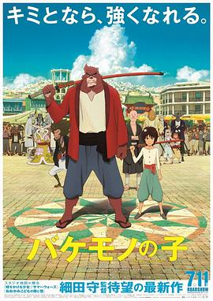

怪物之子 / バケモノの子
又名：怪物的孩子(台) / Bakemono no Ko / The Boy and The Beast
动作戏的动态画得太好了，打戏看得很舒服。结尾的本质依旧是儿子弑父后才获得的成长，这样也使与自己亲生父亲生活在一起有了合理的动机。但熊大才是最值得说道说道的那位主角，无父无母的他的成长轨迹到底更亮眼。意外《白鲸》作为线索的存在，听过马尔克斯的推荐，但没时间拜读。长老被刀吓到的那卡笑喷了。
作品信息
| 导演 | 细田守 |
| 编剧 | 细田守 |
| 主演 | 役所广司 / 宫崎葵 / 染谷将太 / 广濑铃 / 山路和弘 / 宫野真守 / 山口胜平 / 黑木华 / 大野百花 / 诸星堇 / 长塚圭史 / 麻生久美子 / 津川雅彦 / 中村正 / 草村礼子 / 近石真介 / 秋月成美 / 石上静香 / 井上肇 / 岩崎博 / 宇梶刚士 / 牛山茂 / 大西礼芳 / 小栗旬 / 尾崎右宗 / 各务立基 / 虎岛贵明 / 小林正宽 / 小林里乃 / 佐佐木胜彦 / 濑户麻沙美 / 高桥伸也 / 田中要次 / 谷村美月 / 长克巳 / 德本英一郎 / 户田惠 / 中岛广稀 / 中根久美子 / 莲岳大 / 原扶贵子 / 市道真央 / 松本花奈 / 水野智则 / 三宅麻理惠 / 最上嗣生 / 山本兼平 / 悠木碧 / 李千鹤 / 桝太一 / 中川雅也 / 大泉洋 |
| 类型 | 动作 / 动画 / 奇幻 / 冒险 |
| 制片国家/地区 | 日本 |
| 语言 | 日语 |
| 上映日期 | 2015-07-11(日本) / 2016-03-04(美国) |
| 片长 | 119分钟 |
| IMDb | tt4272866 |
说过什么
2026-05-18 23:05:22
广播 · 看过 · ★★★★☆
动作戏的动态画得太好了，打戏看得很舒服。结尾的本质依旧是儿子弑父后才获得的成长，这样也使与自己亲生父亲生活在一起有了合理的动机。但熊大才是最值得说道说道的那位主角，无父无母的他的成长轨迹到底更亮眼。意外《白鲸》作为线索的存在，听过马尔克斯的推荐，但没时间拜读。长老被刀吓到的那卡笑喷了。
最后一次看到是 2026-10-07T23:12:45+08:00 · 豆瓣原页